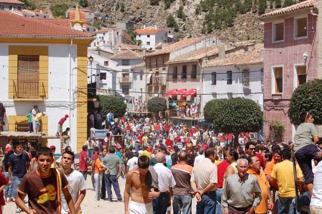
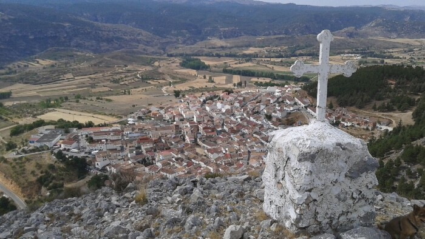
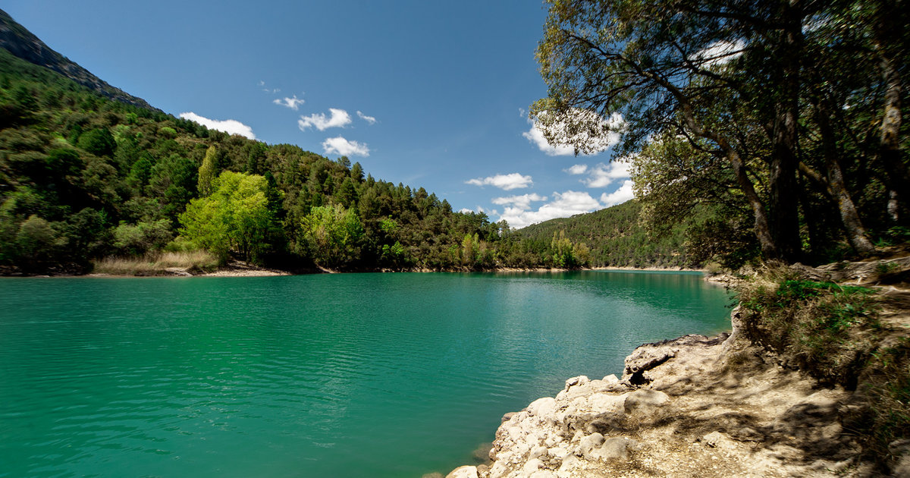
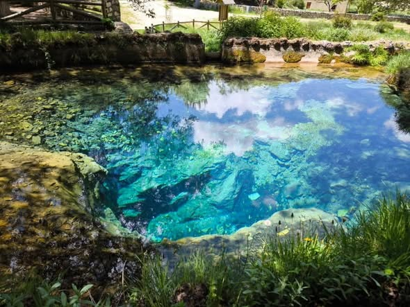
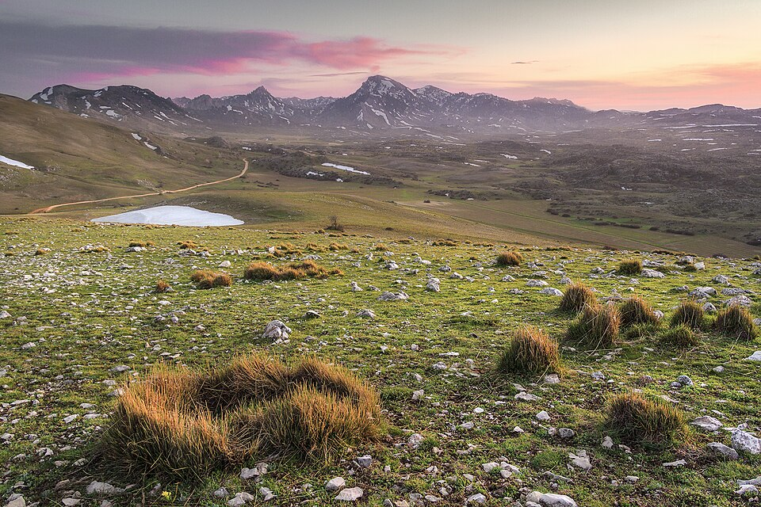
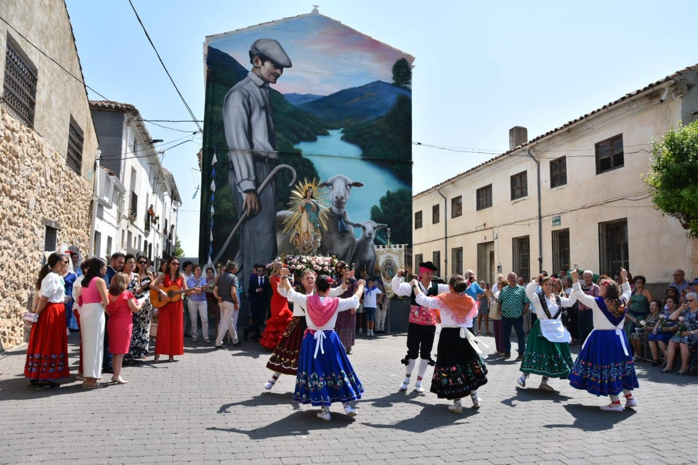

Santiago de la Espada
Núcleo urbano principal y sede del ayuntamiento. Situado a 1.250 m de altitud, este pueblo serrano es la puerta de entrada al municipio y el punto de referencia para los visitantes que recorren la sierra.
Sierra de Segura · Jaén · Andalucía
«Donde los ríos nacen entre los pinos y el silencio tiene el sabor de la resina y el tomillo.»Descubrir

Santiago-Pontones es uno de los municipios más extensos de España, con una superficie aproximada de 580 km², enclavado en el extremo nororiental de la provincia de Jaén, en la comarca de la Sierra de Segura. Su territorio se despliega entre barrancos, cañones fluviales, pinares centenarios y cumbres que superan los 2.000 metros de altitud.
El municipio integra numerosas pedanías dispersas por un paisaje de singular belleza: Pontones, Cerrada de Utrero, El Yelmo, La Toba, Las Casicas, Miller, Arroyo Frío y otros pequeños núcleos que conservan la arquitectura tradicional serrana. Esta dispersión refleja siglos de adaptación al territorio, donde cada comunidad encontró su lugar junto a un manantial, una vega o una ladera abrigada.
Por su término nace y discurre en sus primeros kilómetros el río Segura, que tiene su origen en la Sierra de las Empanadas, a poco más de diez kilómetros al norte de la localidad de Pontones. Ese nacimiento convierte al municipio en la cabecera de toda una cuenca hidrográfica que recorre más de 300 kilómetros hasta el Mar Mediterráneo.
Santiago-Pontones forma parte del Parque Natural de las Sierras de Cazorla, Segura y Las Villas, declarado Reserva de la Biosfera por la UNESCO y considerado el espacio natural protegido más extenso de España, con más de 214.000 hectáreas de bosques, gargantas y cumbres.
Este parque alberga una extraordinaria biodiversidad: más de 1.300 especies de plantas, muchas de ellas endémicas, junto a una fauna que incluye ciervos, jabalíes, cabras montesas, buitres leonados, nutrias y una de las últimas poblaciones de quebrantahuesos de la Península Ibérica.
Las masas forestales de pino laricio, pino silvestre y pino negral conforman un manto verde que en otoño se mezcla con los colores dorados de los robles, álamos y fresnos que bordean los cauces fluviales.

Santiago-Pontones es un destino de referencia para el turismo activo en el sur de España. Su extraordinaria orografía ofrece posibilidades para todos los perfiles, desde el senderismo familiar hasta la escalada deportiva de alto nivel.

Núcleo urbano principal y sede del ayuntamiento. Situado a 1.250 m de altitud, este pueblo serrano es la puerta de entrada al municipio y el punto de referencia para los visitantes que recorren la sierra.

A 1.413 m de altitud, el río Segura brota de una cueva natural inundada junto a la aldea de Fuente Segura. El fenómeno del «reventón» en primavera, cuando el agua surge con fuerza inusitada, es un espectáculo único.

La altiplanicie más extensa de España, a 1.600-1.700 m de altitud, con más de 5.000 hectáreas de pastizales de alta montaña. Un paisaje kárstico sobrecogedor donde el ganado segureño pasta entre piornos y enebros.
La singularidad de Santiago-Pontones reside en su carácter disperso: más de veinte núcleos de población salpican el territorio, cada uno con su propia historia, paisaje y carácter.
Núcleo principal del municipio, junto al nacimiento del río Segura. Centro administrativo y punto de partida para numerosas rutas de montaña.
Aldea a los pies del pico homónimo (1.943 m). Destino popular por sus vistas panorámicas y por ser punto de inicio de rutas de alta montaña.
Enclave espectacular en un cañón fluvial. Famosa por su sector de escalada y por el embalse de la Novia, de aguas verdes y transparentes.
Pequeña aldea serrana de arquitectura tradicional. Tranquilidad y autenticidad en un entorno de bosques, praderas y aire puro.
Pedanía ligada al turismo activo y al río Borosa. Punto de entrada a algunos de los senderos más conocidos y frecuentados del parque natural.
Pequeños núcleos interiores que conservan intacta la arquitectura y los modos de vida tradicionales de la sierra segureña.
La cocina de Santiago-Pontones es heredera directa de la cultura pastoril y cazadora de la sierra. Productos de temporada, recetas transmitidas de generación en generación y el inconfundible aceite de oliva de la Sierra de Segura, con denominación de origen propia.
La Sierra de Segura cuenta con Denominación de Origen Protegida. Sus aceitunas picual producen uno de los mejores aceites vírgenes extra del mundo, de sabor intenso y fragante.
El ciervo, el jabalí y la cabra montesa protagonizan guisos y asados de lenta cocción, platos contundentes para reponer fuerzas tras las jornadas de montaña.
En otoño los pinares ofrecen níscalos, boletus y otras variedades silvestres. Las setas son un ingrediente estrella en la cocina local de temporada.
La tradición ganadera ha dado lugar a embutidos artesanales y quesos de cabra y oveja que se pueden adquirir directamente en las aldeas y mercados locales.
Los vinos de la comarca y los licores de hierbas serranas, elaborados con tomillo, romero y lavanda, acompañan cualquier comida con el aroma de la sierra.
El cocido y los potajes de garbanzos, con habas, berzas y productos del cerdo ibérico, representan la esencia de la cocina de montaña y la hospitalidad serrana.

Pontón Bajo · A orillas del Río Segura · Santiago-Pontones · Sierra de Segura
A pocos kilómetros se alza Segura de la Sierra, villa medieval con uno de los castillos mejor conservados de Andalucía y cuna del poeta Alonso de Ercilla. Su recinto amurallado y sus callejuelas empinadas forman uno de los conjuntos histórico-artísticos más notables de la provincia de Jaén.
La historia de Santiago-Pontones está profundamente ligada a la ganadería trashumante, la explotación forestal y la cultura del agua. Sus habitantes han convivido durante siglos con una naturaleza generosa pero exigente, desarrollando un conocimiento profundo del territorio y sus recursos naturales.
Las fiestas patronales, celebradas en honor a Santiago Apóstol en julio, congregan a vecinos y visitantes en torno a la música, la danza y la gastronomía tradicional. El municipio mantiene vivas numerosas tradiciones de la cultura serrana andaluza: la matanza, la recolección de setas, la trashumancia y las fiestas de invierno.
La arquitectura popular, con sus casas encaladas de muros gruesos, chimeneas de piedra y corrales de ganado, forma parte esencial del paisaje cultural. Muchas de estas construcciones han sido rehabilitadas como casas rurales, permitiendo a los visitantes experimentar el modo de vida serrano de manera auténtica.
La artesanía local incluye trabajos en esparto, cestería, bordados y talla en madera, tradiciones que algunas familias mantienen vivas como testimonio de un modo de vida que supo aprovechar con ingenio los recursos del entorno natural.
«La sierra segureña es uno de esos lugares donde el tiempo transcurre a un ritmo distinto, donde la naturaleza y el ser humano han alcanzado un equilibrio frágil y precioso que merece ser conocido y respetado.»
Santiago-Pontones se encuentra en el extremo nororiental de la provincia de Jaén. Por su situación de montaña, el acceso se realiza principalmente por carretera. Se recomienda disponer de vehículo propio.
Por la A-316 hasta Úbeda y Cazorla, luego por la A-319 hacia el norte del parque natural hasta Pontones.
± 130 km · aprox. 2 hPor la A-30 dirección Murcia, luego la CM-412 hacia Yeste y Nerpio, accediendo por el norte a través de la Sierra de Segura.
± 120 km · aprox. 2 hPor la A-44 hasta Baza y luego la A-317 hacia Huéscar y la Sierra de Segura, accediendo por el sur del parque natural.
± 160 km · aprox. 2 h 30 minGranada (± 180 km), Murcia-Corvera (± 140 km) y Almería (± 200 km). Se recomienda coche de alquiler en destino.
Coche de alquiler recomendadoRecomendación: Las carreteras de acceso son sinuosas y de montaña. Se recomienda conducción prudente, especialmente en invierno cuando puede haber nieve o hielo. Consulta el estado de las carreteras en la web de la DGT antes de iniciar el viaje.